[!WARNING] Working in progress
RedHat Keycloak-26 Performance Test
We want to test the performance of Red Hat Keycloak 26 on a specific requirements and configurations:
- 45 nodes
- 50k users in total
- 100 db connections per node
install keycloak operator
Create a namespace for Keycloak:
oc new-project demo-keycloakAnd install the Keycloak Operator from web UI.
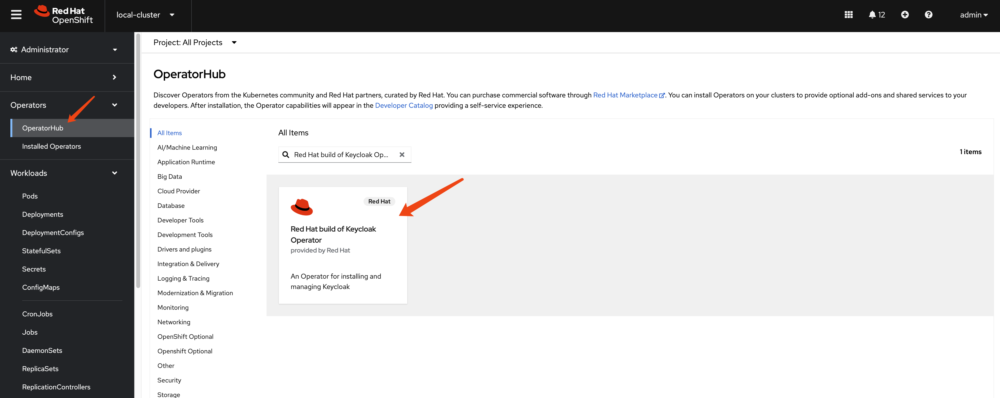
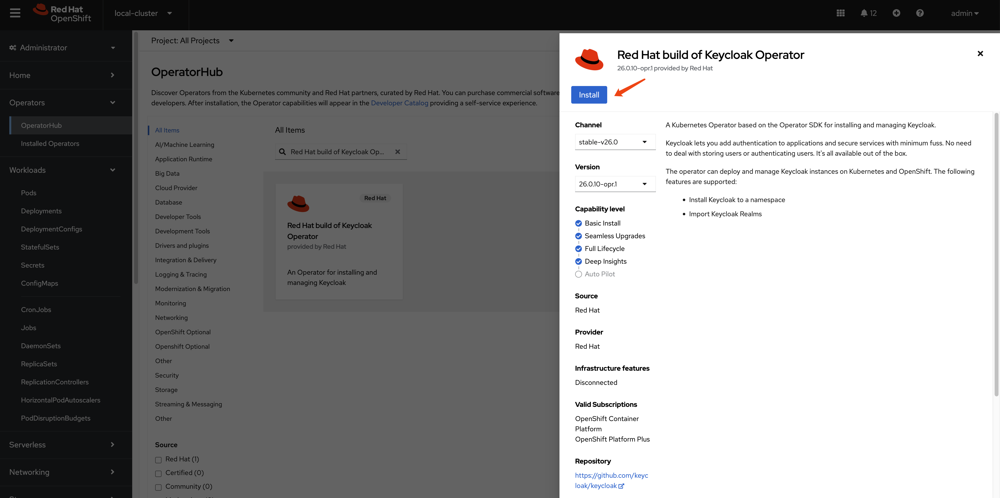
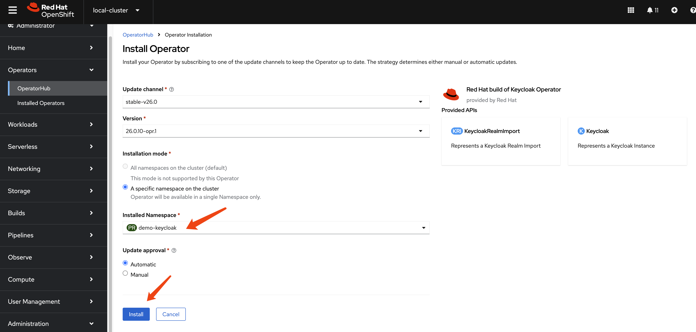
build customer keycloak image
In keycloak
configuration options, there are build options
and configuration. For the
build options, we can only apply such options
during container image creation.
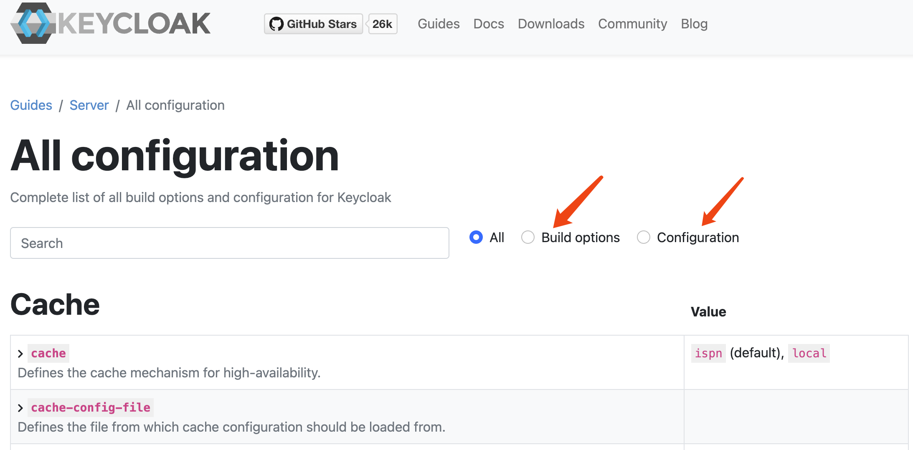
Here is the offical documentation, tell us how to create a customized and optimized container image.
To create a customized keycloak image, we can run the
keycloak with --optimize option, which will skip
the first build stage, and run the keycloak app directly, which
will boost the startup times.
for job_id in 0...9; do
oc delete -n demo-keycloak -f ${BASE_DIR}/data/install/keycloak-script-create-users-${job_id}.yaml
done
mkdir -p ${BASE_DIR}/data/base-images/keycloak
cd ${BASE_DIR}/data/base-images/keycloak
cat << EOF > ${BASE_DIR}/data/base-images/keycloak/Dockerfile
FROM registry.redhat.io/rhbk/keycloak-rhel9:26.0-11 as builder
# Enable health and metrics support
ENV KC_HEALTH_ENABLED=true
ENV KC_METRICS_ENABLED=true
# Enable tracing support
# ENV KC_TRACING_ENABLED=true
# Enable features for tracing/opentelementry
ENV KC_FEATURES=opentelemetry
# Configure a database vendor
ENV KC_DB=postgres
WORKDIR /opt/keycloak
# for demonstration purposes only, please make sure to use proper certificates in production instead
# RUN keytool -genkeypair -storepass password -storetype PKCS12 -keyalg RSA -keysize 2048 -dname "CN=server" -alias server -ext "SAN:c=DNS:localhost,IP:127.0.0.1" -keystore conf/server.keystore
RUN /opt/keycloak/bin/kc.sh build
FROM registry.redhat.io/rhbk/keycloak-rhel9:26.0-11
COPY --from=builder /opt/keycloak/ /opt/keycloak/
# change these values to point to a running postgres instance
ENTRYPOINT ["/opt/keycloak/bin/kc.sh"]
EOF
podman build . -t quay.io/wangzheng422/qimgs:keycloak-26-2025.03.25-v01
podman push quay.io/wangzheng422/qimgs:keycloak-26-2025.03.25-v01create a keycloak instance with basic settings
To create a Keycloak instance with basic settings, first you need to create a backend DB. Then, you can create the Keycloak instance based on this DB.
mkdir -p ${BASE_DIR}/data/install/
oc delete -f ${BASE_DIR}/data/install/keycloak-db-pvc.yaml -n demo-keycloak
cat << EOF > ${BASE_DIR}/data/install/keycloak-db-pvc.yaml
apiVersion: v1
kind: PersistentVolumeClaim
metadata:
name: postgresql-db-pvc
spec:
accessModes:
- ReadWriteOnce
resources:
requests:
storage: 100Gi
EOF
oc create -f ${BASE_DIR}/data/install/keycloak-db-pvc.yaml -n demo-keycloak
oc delete -f ${BASE_DIR}/data/install/keycloak-db.yaml -n demo-keycloak
cat << EOF > ${BASE_DIR}/data/install/keycloak-db.yaml
---
apiVersion: apps/v1
kind: StatefulSet
metadata:
name: postgresql-db
spec:
serviceName: postgresql-db-service
selector:
matchLabels:
app: postgresql-db
replicas: 1
template:
metadata:
labels:
app: postgresql-db
spec:
containers:
- name: postgresql-db
image: postgres:15
args: ["-c", "max_connections=1000"]
volumeMounts:
- mountPath: /data
name: cache-volume
env:
- name: POSTGRES_USER
value: testuser
- name: POSTGRES_PASSWORD
value: testpassword
- name: PGDATA
value: /data/pgdata
- name: POSTGRES_DB
value: keycloak
volumes:
- name: cache-volume
persistentVolumeClaim:
claimName: postgresql-db-pvc
---
apiVersion: v1
kind: Service
metadata:
name: postgres-db
spec:
selector:
app: postgresql-db
type: LoadBalancer
ports:
- port: 5432
targetPort: 5432
EOF
oc create -f ${BASE_DIR}/data/install/keycloak-db.yaml -n demo-keycloakNow, we have a Keycloak database running in our OpenShift cluster. Next, we need to configure Keycloak to use this database.
# create secret needed by keycloak
# the host name here, we use '*' to limit the length of the hostname in the certificate
RHSSO_HOST="*.apps.cluster-b2cpj.b2cpj.sandbox75.opentlc.com"
cd ${BASE_DIR}/data/install/
openssl req -subj "/CN=$RHSSO_HOST/O=Test Keycloak./C=US" -newkey rsa:2048 -nodes -keyout key.pem -x509 -days 365 -out certificate.pem
oc delete secret example-tls-secret -n demo-keycloak
oc create secret tls example-tls-secret --cert certificate.pem --key key.pem -n demo-keycloak
oc delete secret keycloak-db-secret -n demo-keycloak
oc create secret generic keycloak-db-secret -n demo-keycloak \
--from-literal=username=testuser \
--from-literal=password=testpassword
# here we create keycloak instance with postgres db and tls secret
# here we change back the host name to actual hostname
oc delete -f ${BASE_DIR}/data/install/keycloak.yaml -n demo-keycloak
# RHSSO_HOST="keycloak-demo-keycloak.apps.demo-01-rhsys.wzhlab.top"
RHSSO_HOST="example-kc-demo-keycloak.apps.cluster-b2cpj.b2cpj.sandbox75.opentlc.com"
RHSSO_IMAGE="quay.io/wangzheng422/qimgs:keycloak-26-2025.03.25-v01"
cat << EOF > ${BASE_DIR}/data/install/keycloak.yaml
apiVersion: k8s.keycloak.org/v2alpha1
kind: Keycloak
metadata:
name: example-kc
spec:
instances: 1
db:
vendor: postgres
host: postgres-db
usernameSecret:
name: keycloak-db-secret
key: username
passwordSecret:
name: keycloak-db-secret
key: password
http:
tlsSecret: example-tls-secret
httpEnabled: true
# ingress:
# className: openshift-default
hostname:
hostname: $RHSSO_HOST
proxy:
headers: xforwarded
image: $RHSSO_IMAGE
startOptimized: true
EOF
oc create -f ${BASE_DIR}/data/install/keycloak.yaml -n demo-keycloak
# get the keycloak initial admin user and password
oc get secret example-kc-initial-admin -n demo-keycloak -o jsonpath='{.data.username}' | base64 --decode && echo
# temp-admin
oc get secret example-kc-initial-admin -n demo-keycloak -o jsonpath='{.data.password}' | base64 --decode && echo
# 0xxxxxxxxxxxxxxxxxxxxxxxxe
# in postgresql pod terminal
# we can see the current value of max_connections is 1000. We can change it to a higher value if needed.
psql -U testuser -d keycloak
# Type "help" for help.
# keycloak=# SHOW max_connections;
# max_connections
# -----------------
# 1000
# (1 row)check the keycloak instance on web interface
Goto
https://example-kc-demo-keycloak.apps.cluster-r9m7r.r9m7r.sandbox2453.opentlc.com
and login with admin credentials. Then you can see the rhbk
default admin console.
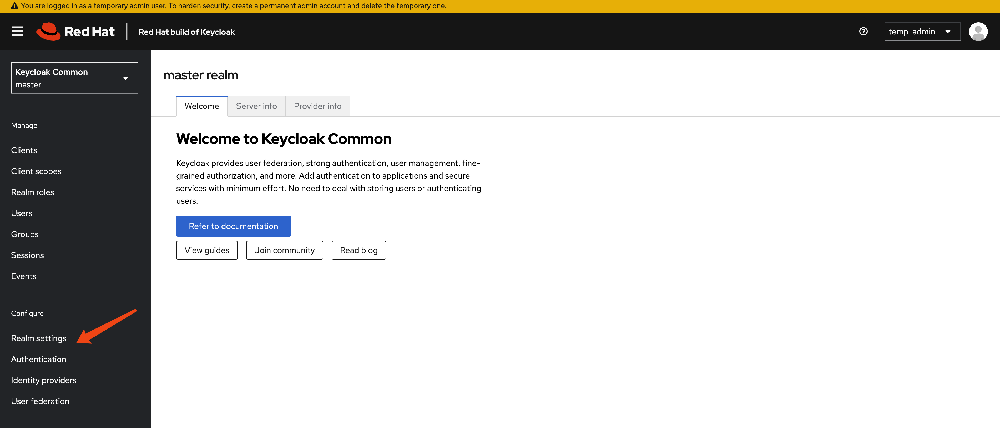
For testing purposes, we will extend the session timeout to several days.
[!WARNING] For testing only, do not use this configuration in production.
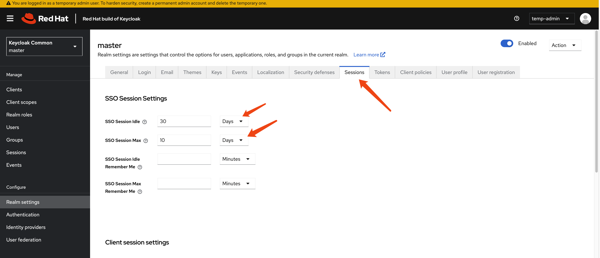
get current keycloak config
Let us check the config of keycloak instance from web
console. Current version is 26.0.10-opr.1.
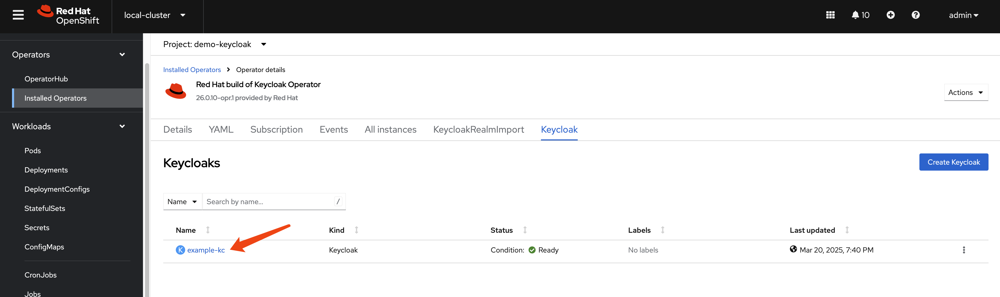
apiVersion: k8s.keycloak.org/v2alpha1
kind: Keycloak
metadata:
name: example-kc
namespace: demo-keycloak
spec:
db:
host: postgres-db
passwordSecret:
key: password
name: keycloak-db-secret
usernameSecret:
key: username
name: keycloak-db-secret
vendor: postgres
hostname:
hostname: example-kc-demo-keycloak.apps.cluster-b2cpj.b2cpj.sandbox75.opentlc.com
http:
httpEnabled: true
tlsSecret: example-tls-secret
# image: 'quay.io/wangzheng422/qimgs:keycloak-26-2025.03.25-v01'
instances: 1
proxy:
headers: xforwarded
# startOptimized: trueNext, we will check the contents of the
/opt/keycloak/conf directory inside the
example-kc-0 pod in the demo-keycloak
namespace. This will help us learn more about how the Keycloak
server is configured.
oc exec -it example-kc-0 -n demo-keycloak -- ls /opt/keycloak/conf
# cache-ispn.xml keycloak.conf README.md truststores
# oc exec -it example-kc-0 -n demo-keycloak -- ls -R /opt/keycloak
oc exec -it example-kc-0 -n demo-keycloak -- cat /opt/keycloak/conf/keycloak.confcontent of /opt/keycloak/conf/keycloak.conf
# Basic settings for running in production. Change accordingly before deploying the server.
# Database
# The database vendor.
#db=postgres
# The username of the database user.
#db-username=keycloak
# The password of the database user.
#db-password=password
# The full database JDBC URL. If not provided, a default URL is set based on the selected database vendor.
#db-url=jdbc:postgresql://localhost/keycloak
# Observability
# If the server should expose healthcheck endpoints.
#health-enabled=true
# If the server should expose metrics endpoints.
#metrics-enabled=true
# HTTP
# The file path to a server certificate or certificate chain in PEM format.
#https-certificate-file=${kc.home.dir}conf/server.crt.pem
# The file path to a private key in PEM format.
#https-certificate-key-file=${kc.home.dir}conf/server.key.pem
# The proxy address forwarding mode if the server is behind a reverse proxy.
#proxy=reencrypt
# Do not attach route to cookies and rely on the session affinity capabilities from reverse proxy
#spi-sticky-session-encoder-infinispan-should-attach-route=false
# Hostname for the Keycloak server.
#hostname=myhostnameNext, let’s check the cache-ispn.xml file. We
can do this by running the following command:
oc exec -it example-kc-0 -n demo-keycloak -- cat /opt/keycloak/conf/cache-ispn.xmlAnd the content of cache-ispn.xml is:
<?xml version="1.0" encoding="UTF-8"?>
<!--
~ Copyright 2019 Red Hat, Inc. and/or its affiliates
~ and other contributors as indicated by the @author tags.
~
~ Licensed under the Apache License, Version 2.0 (the "License");
~ you may not use this file except in compliance with the License.
~ You may obtain a copy of the License at
~
~ http://www.apache.org/licenses/LICENSE-2.0
~
~ Unless required by applicable law or agreed to in writing, software
~ distributed under the License is distributed on an "AS IS" BASIS,
~ WITHOUT WARRANTIES OR CONDITIONS OF ANY KIND, either express or implied.
~ See the License for the specific language governing permissions and
~ limitations under the License.
-->
<infinispan
xmlns:xsi="http://www.w3.org/2001/XMLSchema-instance"
xsi:schemaLocation="urn:infinispan:config:15.0 http://www.infinispan.org/schemas/infinispan-config-15.0.xsd"
xmlns="urn:infinispan:config:15.0">
<cache-container name="keycloak">
<transport lock-timeout="60000" stack="udp"/>
<local-cache name="realms" simple-cache="true">
<encoding>
<key media-type="application/x-java-object"/>
<value media-type="application/x-java-object"/>
</encoding>
<memory max-count="10000"/>
</local-cache>
<local-cache name="users" simple-cache="true">
<encoding>
<key media-type="application/x-java-object"/>
<value media-type="application/x-java-object"/>
</encoding>
<memory max-count="10000"/>
</local-cache>
<distributed-cache name="sessions" owners="1">
<expiration lifespan="-1"/>
<memory max-count="10000"/>
</distributed-cache>
<distributed-cache name="authenticationSessions" owners="2">
<expiration lifespan="-1"/>
</distributed-cache>
<distributed-cache name="offlineSessions" owners="1">
<expiration lifespan="-1"/>
<memory max-count="10000"/>
</distributed-cache>
<distributed-cache name="clientSessions" owners="1">
<expiration lifespan="-1"/>
<memory max-count="10000"/>
</distributed-cache>
<distributed-cache name="offlineClientSessions" owners="1">
<expiration lifespan="-1"/>
<memory max-count="10000"/>
</distributed-cache>
<distributed-cache name="loginFailures" owners="2">
<expiration lifespan="-1"/>
</distributed-cache>
<local-cache name="authorization" simple-cache="true">
<encoding>
<key media-type="application/x-java-object"/>
<value media-type="application/x-java-object"/>
</encoding>
<memory max-count="10000"/>
</local-cache>
<replicated-cache name="work">
<expiration lifespan="-1"/>
</replicated-cache>
<local-cache name="keys" simple-cache="true">
<encoding>
<key media-type="application/x-java-object"/>
<value media-type="application/x-java-object"/>
</encoding>
<expiration max-idle="3600000"/>
<memory max-count="1000"/>
</local-cache>
<distributed-cache name="actionTokens" owners="2">
<encoding>
<key media-type="application/x-java-object"/>
<value media-type="application/x-java-object"/>
</encoding>
<expiration max-idle="-1" lifespan="-1" interval="300000"/>
<memory max-count="-1"/>
</distributed-cache>
</cache-container>
</infinispan>It is interesting to see how the cache-ispn.xml
file has been modified since rhbk-24, espeically in the
sessions section and the
<memory max-count="10000"/>
configuration.
monitor the keycloak instance
Now, we need to configure openshift-monitoring
to monitor the keycloak instance. We can do this by creating a
configmap and applying it to the cluster. Here is an example of
how to create the configmap and monitoring settings.
# create a configmap for openshift-monitoring to enable monitoring for customer workload
cat << EOF > ${BASE_DIR}/data/install/enable-monitor.yaml
apiVersion: v1
kind: ConfigMap
metadata:
name: cluster-monitoring-config
namespace: openshift-monitoring
data:
config.yaml: |
enableUserWorkload: true
# alertmanagerMain:
# enableUserAlertmanagerConfig: true
EOF
oc apply -f ${BASE_DIR}/data/install/enable-monitor.yaml
oc -n openshift-user-workload-monitoring get pod
# monitor keycloak
oc delete -n demo-keycloak -f ${BASE_DIR}/data/install/keycloak-monitor.yaml
cat << EOF > ${BASE_DIR}/data/install/keycloak-monitor.yaml
---
apiVersion: monitoring.coreos.com/v1
kind: ServiceMonitor
metadata:
name: keycloak
namespace: demo-keycloak
spec:
endpoints:
- interval: 5s
path: /metrics
port: management
scheme: https
tlsConfig:
insecureSkipVerify: true
namespaceSelector:
matchNames:
- demo-keycloak
selector:
matchLabels:
app: keycloak
EOF
oc apply -f ${BASE_DIR}/data/install/keycloak-monitor.yaml -n demo-keycloakcheck the metric on ocp web console
By login to the ocp web console, we can check the metric on
the dashboard, using
jboss_infinispan_number_of_entries_in_memory as
metrics, we can see internal statics of keycloak/infinispan.
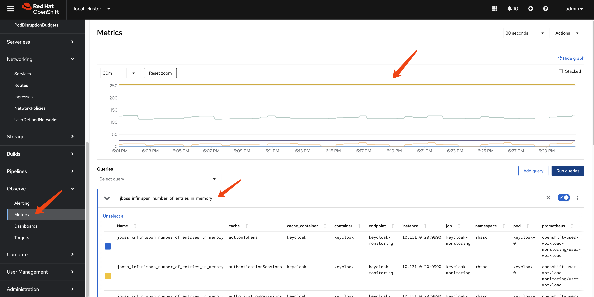
create testing data in keycloak
We will create some (50k) users under a new realm in Keycloak to test the performance of keycloak.
create keycloak-tool container image
We need a pod to run testing scripts, and the script will call keycloak API to perform operations. So we will create a dedicated container image for the pod.
We will use redhat official container image for keycloak. You can find the image on Red Hat Container Catalog:
- https://catalog.redhat.com/software/containers/rhbk/keycloak-rhel9/64f0add883a29ec473d40906?container-tabs=dockerfile
# as root
mkdir -p ${BASE_DIR}/data/keycloak.tool
cd ${BASE_DIR}/data/keycloak.tool
cat << 'EOF' > bashrc
alias ls='ls --color=auto'
export PATH=/opt/keycloak/bin:$PATH
EOF
cat << EOF > Dockerfile
FROM registry.redhat.io/ubi9/ubi AS ubi-micro-build
RUN mkdir -p /mnt/rootfs
RUN dnf install --installroot /mnt/rootfs --releasever 9 --setopt install_weak_deps=false --nodocs -y /usr/bin/ps bash-completion coreutils /usr/bin/curl jq python3 /usr/bin/tar /usr/bin/sha256sum vim nano && \
dnf --installroot /mnt/rootfs clean all && \
rpm --root /mnt/rootfs -e --nodeps setup
FROM registry.redhat.io/rhbk/keycloak-rhel9:26.0-11
COPY --from=ubi-micro-build /mnt/rootfs /
COPY bashrc /opt/keycloak/.bashrc
EOF
podman build -t quay.io/wangzheng422/qimgs:keycloak-26.tool-2025-03-21-v01 .
podman push quay.io/wangzheng422/qimgs:keycloak-26.tool-2025-03-21-v01
podman run -it --entrypoint /bin/bash quay.io/wangzheng422/qimgs:keycloak-26.tool-2025-03-21-v01deploy keycloak tool on ocp
oc delete -n demo-keycloak -f ${BASE_DIR}/data/install/keycloak.tool.yaml
cat << EOF > ${BASE_DIR}/data/install/keycloak.tool.yaml
apiVersion: v1
kind: Pod
metadata:
name: keycloak-tool
spec:
containers:
- name: keycloak-tool-container
image: quay.io/wangzheng422/qimgs:keycloak-26.tool-2025-03-21-v01
command: ["tail", "-f", "/dev/null"]
EOF
oc apply -f ${BASE_DIR}/data/install/keycloak.tool.yaml -n demo-keycloak
# start the shell
oc exec -it keycloak-tool -n demo-keycloak -- bash
# copy something out
oc cp -n demo-keycloak keycloak-tool:/opt/keycloak/metrics ./metricsinit demo users
First, we need to create 50k user in keycloak.
Lets do it by using keycloak admin cli.
This is the script framework, and we’ve written the entire process here. However, we are only creating realms. The script for creating users only demonstrates the creation logic; there are dedicated chapters later that will use more techniques to create users.
ADMIN_PWD='0xxxxxxxxxxxxxxxxxxxxxxxxxxe'
# after enable http in keycloak, you can use http endpoint
# it is better to set session timeout for admin for 1 day :)
kcadm.sh config credentials --server http://example-kc-service:8080/ --realm master --user temp-admin --password $ADMIN_PWD
# create a realm
kcadm.sh create realms -s realm=performance -s enabled=true
# Set SSO Session Max and SSO Session Idle to 1 day (1440 minutes)
kcadm.sh update realms/performance -s 'ssoSessionMaxLifespan=86400' -s 'ssoSessionIdleTimeout=86400'
# delete the realm
kcadm.sh delete realms/performance
# create a client
kcadm.sh create clients -r performance -s clientId=performance -s enabled=true -s 'directAccessGrantsEnabled=true'
# delete the client
CLIENT_ID=$(kcadm.sh get clients -r performance -q clientId=performance | jq -r '.[0].id')
if [ -n "$CLIENT_ID" ]; then
echo "Deleting client performance"
kcadm.sh delete clients/$CLIENT_ID -r performance
else
echo "Client performance not found"
fi
# create 50k user, from user-00001 to user-50000, and set password for each user
for i in {1..50000}; do
echo "Creating user user-$(printf "%05d" $i)"
kcadm.sh create users -r performance -s username=user-$(printf "%05d" $i) -s enabled=true -s email=user-$(printf "%05d" $i)@wzhlab.top -s firstName=First-$(printf "%05d" $i) -s lastName=Last-$(printf "%05d" $i)
kcadm.sh set-password -r performance --username user-$(printf "%05d" $i) --new-password password
done
# Delete users
for i in {1..50000}; do
USER_ID=$(kcadm.sh get users -r performance -q username=user-$(printf "%05d" $i) | jq -r '.[0].id')
if [ -n "$USER_ID" ]; then
echo "Deleting user user-$(printf "%05d" $i)"
kcadm.sh delete users/$USER_ID -r performance
else
echo "User user-$(printf "%05d" $i) not found"
fi
donecreate user using job
Now we try to create users using jobs.
First, we create a service account, and assign priviledge to it, so it can run the script in keycloak-tool.
oc delete -n demo-keycloak -f ${BASE_DIR}/data/install/keycloak-script-create-users.yaml
cat << EOF > ${BASE_DIR}/data/install/keycloak-script-sa.yaml
---
apiVersion: v1
kind: ServiceAccount
metadata:
name: keycloak-sa
namespace: demo-keycloak
---
apiVersion: security.openshift.io/v1
kind: SecurityContextConstraints
metadata:
name: keycloak-scc
allowHostDirVolumePlugin: false
allowHostIPC: false
allowHostNetwork: false
allowHostPID: false
allowHostPorts: false
allowPrivilegeEscalation: true
allowPrivilegedContainer: false
allowedCapabilities: []
defaultAddCapabilities: []
fsGroup:
type: RunAsAny
groups: []
priority: null
readOnlyRootFilesystem: false
requiredDropCapabilities: []
runAsUser:
type: MustRunAs
uid: 1000
seLinuxContext:
type: RunAsAny
seccompProfiles:
- '*'
supplementalGroups:
type: RunAsAny
users:
- system:serviceaccount:demo-keycloak:keycloak-sa
volumes:
- configMap
- emptyDir
- projected
- secret
- downwardAPI
EOF
oc apply -f ${BASE_DIR}/data/install/keycloak-script-sa.yaml -n demo-keycloak
oc adm policy add-scc-to-user keycloak-scc -z keycloak-sa -n demo-keycloakcreate user use multiple jobs
TOTAL_USERS=50000
NUM_JOBS=10
USERS_PER_JOB=$((TOTAL_USERS / NUM_JOBS))
for job_id in $(seq 1 $NUM_JOBS); do
START_USER=$(( (job_id - 1) * USERS_PER_JOB + 1 ))
END_USER=$(( job_id * USERS_PER_JOB ))
cat << EOF > ${BASE_DIR}/data/install/keycloak-script-create-users-${job_id}.yaml
---
apiVersion: v1
kind: ConfigMap
metadata:
name: keycloak-script-config-${job_id}
data:
create-users.sh: |
kcadm.sh config credentials --server http://example-kc-service:8080/ --realm master --user temp-admin --password $ADMIN_PWD
for i in {$START_USER..$END_USER}; do
echo "Creating user user-\$(printf "%05d" \$i)"
kcadm.sh create users -r performance -s username=user-\$(printf "%05d" \$i) -s enabled=true -s email=user-\$(printf "%05d" \$i)@wzhlab.top -s firstName=First-\$(printf "%05d" \$i) -s lastName=Last-\$(printf "%05d" \$i)
kcadm.sh set-password -r performance --username user-\$(printf "%05d" \$i) --new-password password
done
---
apiVersion: batch/v1
kind: Job
metadata:
name: keycloak-create-users-job-${job_id}
spec:
template:
spec:
serviceAccountName: keycloak-sa
containers:
- name: keycloak-tool
image: quay.io/wangzheng422/qimgs:keycloak-26.tool-2025-03-21-v01
command: ["/bin/bash", "-c"]
args: ["source /opt/keycloak/.bashrc && cp /scripts/create-users.sh /tmp/create-users.sh && chmod +x /tmp/create-users.sh && bash /tmp/create-users.sh"]
securityContext:
runAsUser: 1000
volumeMounts:
- name: script-volume
mountPath: /scripts
restartPolicy: Never
volumes:
- name: script-volume
configMap:
name: keycloak-script-config-${job_id}
backoffLimit: 4
EOF
oc delete -n demo-keycloak -f ${BASE_DIR}/data/install/keycloak-script-create-users-${job_id}.yaml
oc apply -f ${BASE_DIR}/data/install/keycloak-script-create-users-${job_id}.yaml -n demo-keycloak
done
# if you want to remove the jobs
for job_id in {1..10}; do
oc delete -n demo-keycloak -f ${BASE_DIR}/data/install/keycloak-script-create-users-${job_id}.yaml
done
If everything ok, you can see those users in web console.
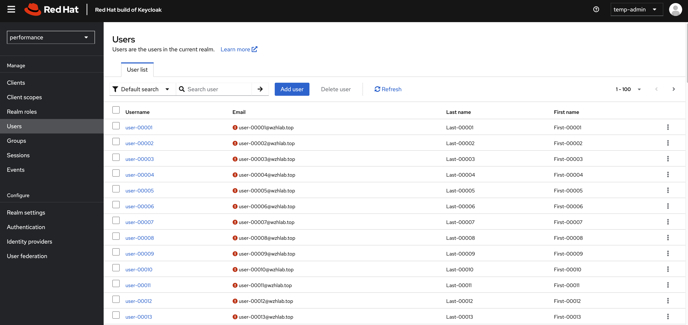
test performance using curl
Now, we have 50k user in keycloak. Lets test the performance of keycloak.
Get the client secert from keycloak’s web console.
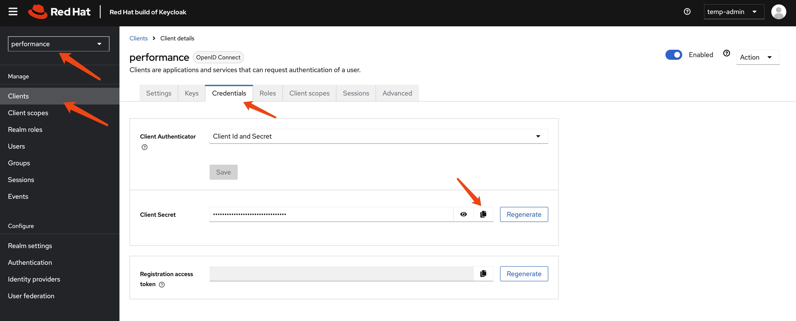
And test the login rest api using curl.
# test the performance of keycloak, by login with each user
CLIENT_SECRET="hxxxxxxxxxxxxxxxxxxxxq"
curl -X POST 'http://example-kc-service:8080/realms/performance/protocol/openid-connect/token' \
-H "Content-Type: application/x-www-form-urlencoded" \
-d "client_id=performance" \
-d "client_secret=$CLIENT_SECRET" \
-d "username=user-00001" \
-d "password=password" \
-d "grant_type=password" | jq .
# {
# "access_token": "eyJhbGciOiJSUzI1NiIsInR5cCIgOiAiSldUIiwia2lkIiA6ICJick9pa2tPX3l2dmtoVzlLc05zTEVUMWctSWhfZ0g2WExZZnE5U1ZfeXZFIn0.eyJleHAiOjE3MjgyMjY5NTgsImlhdCI6MTcyODIyNjY1OCwianRpIjoiMzQ5ZGZjZTctNzY1Zi00Yjc0LTgyNjMtMzlmZmQ2NDA3ZjYwIiwiaXNzIjoiaHR0cHM6Ly9rZXljbG9hay1kZW1vLWtleWNsb2FrLmFwcHMuZGVtby0wMS1yaHN5cy53emhsYWIudG9wL3JlYWxtcy9wZXJmb3JtYW5jZSIsImF1ZCI6ImFjY291bnQiLCJzdWIiOiIxZWMxMmRhZC0wMWMwLTQ5N2YtOTkzMS0xZjIyMGJiMmI5OTMiLCJ0eXAiOiJCZWFyZXIiLCJhenAiOiJwZXJmb3JtYW5jZSIsInNlc3Npb25fc3RhdGUiOiIyOWQzYTUyZC0zNjExLTQ4YzktOWM5MC0yOTE2YmMxY2Q2ODciLCJhY3IiOiIxIiwicmVhbG1fYWNjZXNzIjp7InJvbGVzIjpbImRlZmF1bHQtcm9sZXMtcGVyZm9ybWFuY2UiLCJvZmZsaW5lX2FjY2VzcyIsInVtYV9hdXRob3JpemF0aW9uIl19LCJyZXNvdXJjZV9hY2Nlc3MiOnsiYWNjb3VudCI6eyJyb2xlcyI6WyJtYW5hZ2UtYWNjb3VudCIsIm1hbmFnZS1hY2NvdW50LWxpbmtzIiwidmlldy1wcm9maWxlIl19fSwic2NvcGUiOiJlbWFpbCBwcm9maWxlIiwic2lkIjoiMjlkM2E1MmQtMzYxMS00OGM5LTljOTAtMjkxNmJjMWNkNjg3IiwiZW1haWxfdmVyaWZpZWQiOmZhbHNlLCJuYW1lIjoiRmlyc3QtMDAwMDEgTGFzdC0wMDAwMSIsInByZWZlcnJlZF91c2VybmFtZSI6InVzZXItMDAwMDEiLCJnaXZlbl9uYW1lIjoiRmlyc3QtMDAwMDEiLCJmYW1pbHlfbmFtZSI6Ikxhc3QtMDAwMDEiLCJlbWFpbCI6InVzZXItMDAwMDFAd3pobGFiLnRvcCJ9.ioqCjbSuolrhGDPW8SF_Ls0NTOn9mJM8QO7btRo7N24lLZrNaKNrv7R5Mvcs4Bu5xDuB5KHEDh-IU-c3iT8TRK8hc5DHhWYwe7_WICp_O7DQEVIP-9wgeqSY4qmdwBkXvwYN0q8AIOjRwYOYqTP6rLcWiPEhdWDqkCL-S9tyhYBwRt44-k455zi1JOFSBd_vWVXp68TJ5b8TWResz3L-cT02Fk0y9_RZBXang1I3tZUOqpHBCVBhRlDwAvst2QtE3tG-rnIXBR4l1vVn1TXlfoRiDwXE5ski9B1KhHuRNZEqbPdkFpWIfb01h9qwtygv4yNKJEW_knw5t_7iaOwRhA",
# "expires_in": 300,
# "refresh_expires_in": 86400,
# "refresh_token": "eyJhbGciOiJIUzUxMiIsInR5cCIgOiAiSldUIiwia2lkIiA6ICI2YWY4Mjc5Mi02NmQ3LTQ0OWItODI4MS0wY2M0NWU4ZjU0ZTkifQ.eyJleHAiOjE3MjgzMTMwNTgsImlhdCI6MTcyODIyNjY1OCwianRpIjoiYjczYWYxODktZDQzZi00MjZiLWJhZGYtNjc0NTI3MGIzZWIzIiwiaXNzIjoiaHR0cHM6Ly9rZXljbG9hay1kZW1vLWtleWNsb2FrLmFwcHMuZGVtby0wMS1yaHN5cy53emhsYWIudG9wL3JlYWxtcy9wZXJmb3JtYW5jZSIsImF1ZCI6Imh0dHBzOi8va2V5Y2xvYWstZGVtby1rZXljbG9hay5hcHBzLmRlbW8tMDEtcmhzeXMud3pobGFiLnRvcC9yZWFsbXMvcGVyZm9ybWFuY2UiLCJzdWIiOiIxZWMxMmRhZC0wMWMwLTQ5N2YtOTkzMS0xZjIyMGJiMmI5OTMiLCJ0eXAiOiJSZWZyZXNoIiwiYXpwIjoicGVyZm9ybWFuY2UiLCJzZXNzaW9uX3N0YXRlIjoiMjlkM2E1MmQtMzYxMS00OGM5LTljOTAtMjkxNmJjMWNkNjg3Iiwic2NvcGUiOiJlbWFpbCBwcm9maWxlIiwic2lkIjoiMjlkM2E1MmQtMzYxMS00OGM5LTljOTAtMjkxNmJjMWNkNjg3In0.un_vmkLIo8elfXAwrgYAnCd6xMHtPkER1j7xuxaDn_lbdmFJSBYJld4YdB6Rxezv7auOmEdd9y1GiFGd3SOGUw",
# "token_type": "Bearer",
# "not-before-policy": 0,
# "session_state": "29d3a52d-3611-48c9-9c90-2916bc1cd687",
# "scope": "email profile"
# }We can see it is ok to call rest api to login, so we can carry out out testing by using the login rest api.
test with python job
We also need a benchmark tool to test the rhsso, we can use python to write a simple script to do this. The python has a build-in prometheus client, so we can monitor the python pod with prometheus.
Make changes to performance_test_keycloak.py,
espeically the client secert, then copy file
performance_test_keycloak.py from ./files to
bastation. And create jobs using the python script.
URL='http://example-kc-service:8080/realms/performance/protocol/openid-connect/token'
VAR_PROJECT=demo-keycloak
# copy file performance_test_keycloak.py from ./files
oc delete -n demo-keycloak configmap performance-test-script
oc create configmap performance-test-script -n demo-keycloak --from-file=${BASE_DIR}/data/install/performance_test_keycloak.py
oc delete -n $VAR_PROJECT -f ${BASE_DIR}/data/install/performance-test-deployment.yaml
cat << EOF > ${BASE_DIR}/data/install/performance-test-deployment.yaml
---
apiVersion: apps/v1
kind: Deployment
metadata:
name: performance-test-deployment
spec:
replicas: 1
selector:
matchLabels:
app: performance-test
template:
metadata:
labels:
app: performance-test
spec:
containers:
- name: performance-test
image: quay.io/wangzheng422/qimgs:rocky9-test-2024.10.14.v01
command: ["/usr/bin/python3", "/scripts/performance_test_keycloak.py"]
env:
- name: CLIENT_SECRET
value: $CLIENT_SECRET # Replace this with your actual client key here.
- name: NUM_USERS
value: "50000"
- name: NUM_THREADS
value: "100"
volumeMounts:
- name: script-volume
mountPath: /scripts
restartPolicy: Always
volumes:
- name: script-volume
configMap:
name: performance-test-script
---
apiVersion: v1
kind: Service
metadata:
name: performance-test-service
labels:
app: performance-test
spec:
selector:
app: performance-test
ports:
- name: http
protocol: TCP
port: 8000
targetPort: 8000
EOF
oc apply -f ${BASE_DIR}/data/install/performance-test-deployment.yaml -n $VAR_PROJECTmonitor metrics using ocp monitoring
Our performance testing script has promethus build-in, so we can monitor the performance test result using openshift monitoring subsystem.
VAR_PROJECT=demo-keycloak
oc delete -n $VAR_PROJECT -f ${BASE_DIR}/data/install/performance-monitor.yaml
cat << EOF > ${BASE_DIR}/data/install/performance-monitor.yaml
---
apiVersion: monitoring.coreos.com/v1
kind: ServiceMonitor
metadata:
name: performance-test
namespace: $VAR_PROJECT
spec:
endpoints:
- interval: 5s
path: /metrics
port: http
scheme: http
namespaceSelector:
matchNames:
- $VAR_PROJECT
selector:
matchLabels:
app: performance-test
EOF
oc apply -f ${BASE_DIR}/data/install/performance-monitor.yaml -n $VAR_PROJECTYou can checkout the metrics by search the name begins with
wzh, like wzh_avg_time_sec and
wzh_success_rate_sec
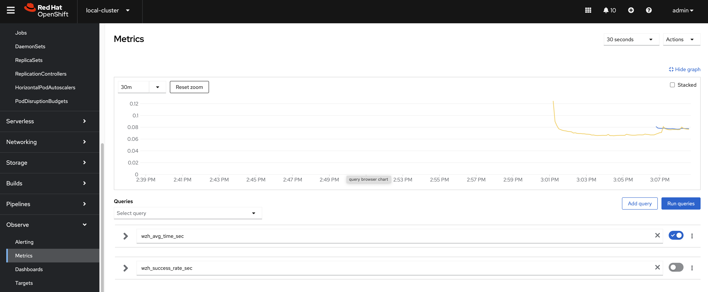
patch to the keycloak instance config using 2 owner 2 instance.
- https://www.keycloak.org/server/all-config
- https://www.keycloak.org/server/caching
Update cache-ispn.xml with the following
content, I update the memory max-count to
50kx100 = 5000k = 5m,
which is 10 times the target user number, and update
lifespan to 1 day, which is based on
use case, also enable statistics, and set
owners to 2.
cat << EOF > ${BASE_DIR}/data/install/keycloak.cache-ispn.xml
<infinispan
xmlns:xsi="http://www.w3.org/2001/XMLSchema-instance"
xsi:schemaLocation="urn:infinispan:config:15.0 http://www.infinispan.org/schemas/infinispan-config-15.0.xsd"
xmlns="urn:infinispan:config:15.0">
<cache-container name="keycloak" statistics="true">
<transport lock-timeout="60000" stack="udp"/>
<metrics names-as-tags="true" />
<local-cache name="realms" simple-cache="true" statistics="true">
<encoding>
<key media-type="application/x-java-object"/>
<value media-type="application/x-java-object"/>
</encoding>
<memory max-count="10000"/>
</local-cache>
<local-cache name="users" simple-cache="true" statistics="true">
<encoding>
<key media-type="application/x-java-object"/>
<value media-type="application/x-java-object"/>
</encoding>
<memory max-count="5000000"/>
</local-cache>
<distributed-cache name="sessions" owners="2" statistics="true">
<expiration lifespan="86400"/>
</distributed-cache>
<distributed-cache name="authenticationSessions" owners="2" statistics="true">
<expiration lifespan="86400"/>
<memory max-count="5000000"/>
</distributed-cache>
<distributed-cache name="offlineSessions" owners="2" statistics="true">
<expiration lifespan="86400"/>
<memory max-count="500000"/>
</distributed-cache>
<distributed-cache name="clientSessions" owners="2" statistics="true">
<expiration lifespan="86400"/>
<memory max-count="500000"/>
</distributed-cache>
<distributed-cache name="offlineClientSessions" owners="2" statistics="true">
<expiration lifespan="86400"/>
<memory max-count="5000000"/>
</distributed-cache>
<distributed-cache name="loginFailures" owners="2" statistics="true">
<expiration lifespan="86400"/>
<memory max-count="5000000"/>
</distributed-cache>
<local-cache name="authorization" simple-cache="true">
<encoding>
<key media-type="application/x-java-object"/>
<value media-type="application/x-java-object"/>
</encoding>
<memory max-count="5000000"/>
</local-cache>
<replicated-cache name="work" statistics="true">
<expiration lifespan="86400"/>
</replicated-cache>
<local-cache name="keys" simple-cache="true" statistics="true">
<encoding>
<key media-type="application/x-java-object"/>
<value media-type="application/x-java-object"/>
</encoding>
<expiration max-idle="3600000"/>
<memory max-count="5000000"/>
</local-cache>
<distributed-cache name="actionTokens" owners="2" statistics="true">
<encoding>
<key media-type="application/x-java-object"/>
<value media-type="application/x-java-object"/>
</encoding>
<expiration max-idle="86400" lifespan="86400" interval="300000"/>
<memory max-count="5000000"/>
</distributed-cache>
</cache-container>
</infinispan>
EOF
# create configmap
oc delete configmap keycloak-cache-ispn -n demo-keycloak
oc create configmap keycloak-cache-ispn --from-file=${BASE_DIR}/data/install/keycloak.cache-ispn.xml -n demo-keycloakThen, we update the config of the keycloak instance to enable HTTP and configure the cache, enable metrics.
apiVersion: k8s.keycloak.org/v2alpha1
kind: Keycloak
metadata:
name: example-kc
namespace: demo-keycloak
spec:
......
http:
httpEnabled: true
cache:
configMapFile:
key: keycloak.cache-ispn.xml
name: keycloak-cache-ispn
db:
poolMaxSize: 100
resources:
requests:
memory: "2Gi"
limits:
memory: "64Gi"
additionalOptions:
- name: metrics-enabled
value: 'true'
# - name: cache-metrics-histograms-enabled
# value: 'true'
- name: features-disabled
value: 'persistent-user-sessions'
- name: log-console-level
value: 'error'
# - name: log-level
# value: debug
instances: 2
......It seems the config is enabled using env. Here is part of the keycload pod yaml file:
kind: Pod
apiVersion: v1
metadata:
name: example-kc-0
namespace: demo-keycloak
......
spec:
......
containers:
- name: keycloak
......
env:
- name: KC_HOSTNAME
value: example-kc-demo-keycloak.apps.cluster-r9m7r.r9m7r.sandbox2453.opentlc.com
- name: KC_HTTP_ENABLED
value: 'true'
- name: KC_HTTP_PORT
value: '8080'
- name: KC_HTTPS_PORT
value: '8443'
- name: KC_HTTPS_CERTIFICATE_FILE
value: /mnt/certificates/tls.crt
- name: KC_HTTPS_CERTIFICATE_KEY_FILE
value: /mnt/certificates/tls.key
- name: KC_DB
value: postgres
- name: KC_DB_USERNAME
valueFrom:
secretKeyRef:
name: keycloak-db-secret
key: username
- name: KC_DB_PASSWORD
valueFrom:
secretKeyRef:
name: keycloak-db-secret
key: password
- name: KC_DB_URL_HOST
value: postgres-db
- name: KC_DB_POOL_MAX_SIZE
value: '100'
- name: KC_CACHE_CONFIG_FILE
value: cache/keycloak.cache-ispn.xml
- name: KC_PROXY_HEADERS
value: xforwarded
- name: KC_BOOTSTRAP_ADMIN_USERNAME
valueFrom:
secretKeyRef:
name: example-kc-initial-admin
key: username
- name: KC_BOOTSTRAP_ADMIN_PASSWORD
valueFrom:
secretKeyRef:
name: example-kc-initial-admin
key: password
- name: KC_HEALTH_ENABLED
value: 'true'
- name: KC_CACHE
value: ispn
- name: KC_CACHE_STACK
value: kubernetes
- name: KC_TRUSTSTORE_PATHS
value: '/var/run/secrets/kubernetes.io/serviceaccount/ca.crt,/var/run/secrets/kubernetes.io/serviceaccount/service-ca.crt'
- name: KC_TRACING_SERVICE_NAME
value: example-kc
- name: KC_TRACING_RESOURCE_ATTRIBUTES
value: k8s.namespace.name=demo-keycloak
......monitoring and reporting
We will use 2 keycloak instances, and 2 owner as baseline. We will use 100 testing pod, which is 100x10=1000 simulated users.
- wzh_success_rate_sec
- wzh_avg_time_sec
- sum(rate(wzh_success_count_total[5m]))
- sum by (state) (jvm_threads_states_threads)
- rate(base_gc_time_total[5m])
- sum by (cache) (rate(vendor_statistics_miss_primary_owner_total[5m]))
- avg by (uri) (rate(http_server_requests_seconds_sum[1m]))
- http_server_active_requests
- jvm_threads_peak_threads
- sum by (cache) (vendor_statistics_approximate_entries_in_memory)
- sum by (cache) (vendor_statistics_approximate_entries)
- vendor_statistics_approximate_entries
- vendor_statistics_number_of_entries
- sum by (cache) (vendor_statistics_number_of_entries)
keycloak’s cpu and memory usage looks like cpu: 24cpu, and memory: 16GB (with session persistence enabled)
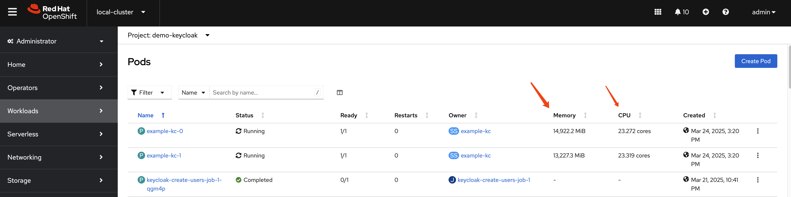
And, it seems there is a increase for http request times, and the reason maybe
- user session is storged in database (persistent)
If without user session storage in database, it will increase to 30cpu, 50GB
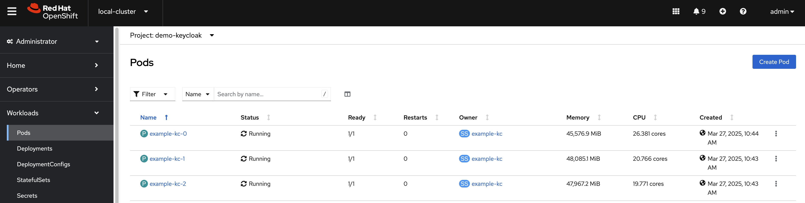
And it seems no increase for http request time.
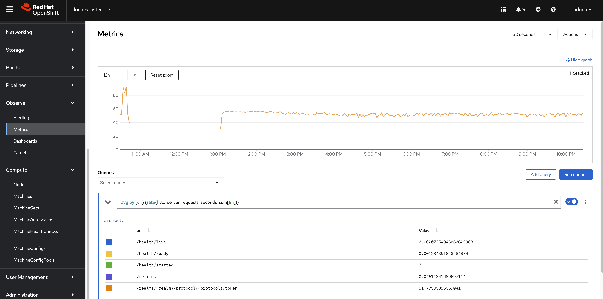
Another interseting thing is that the number of logins/second, without user session persistence, seems to be much faster than with user session persistence, from ~400 to ~1100 logins/second.
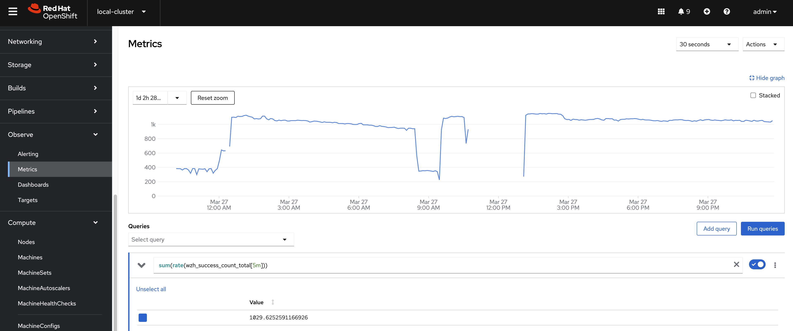
The keycloak response time is relative stable at 200ms, and success rate is 100%.
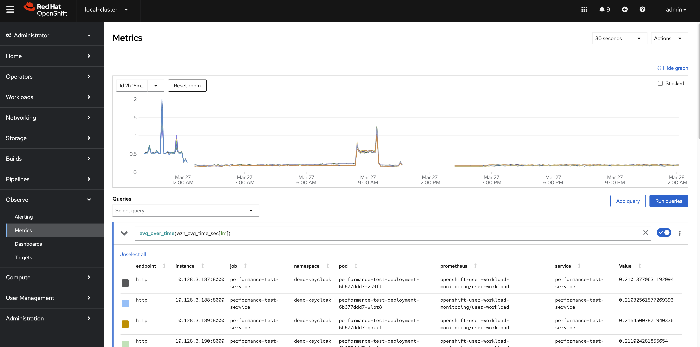
conclusion
Based on the performance test results, the Keycloak system demonstrates stable response times and a 100% success rate. These results suggest that the Keycloak system is effectively handling requests and maintaining high performance levels. Additional testing and optimization may be required to ensure consistent performance across different use cases.